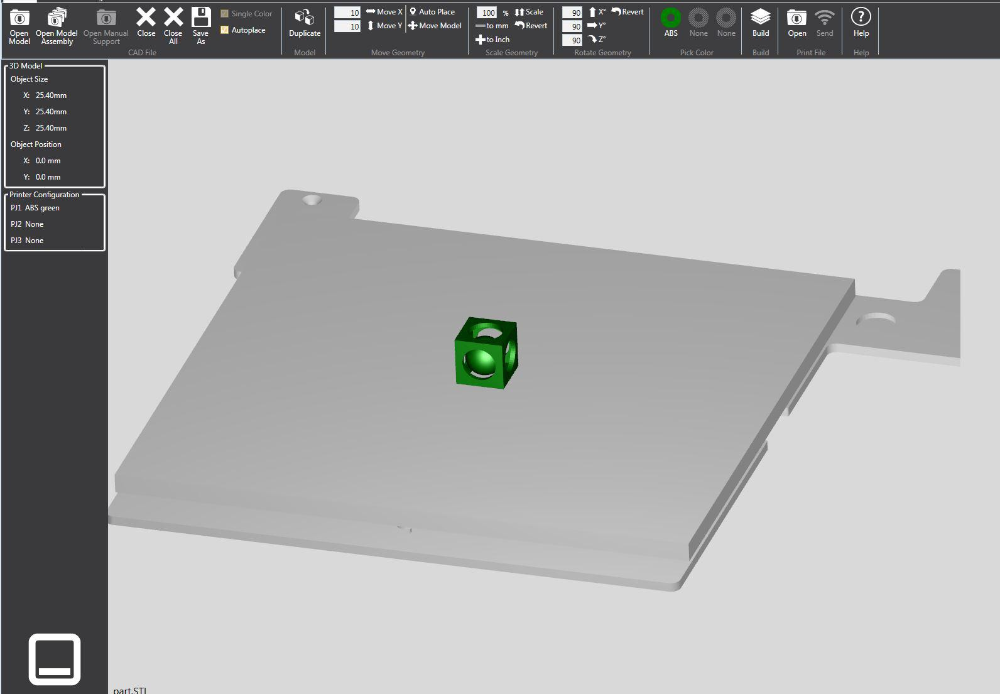

Configuring the 3D Printer
Tweaking the Printer Settings
-
In the CubePro software, you will need to set the printer configurations for your project. For this application, you will use the settings shown below.

Orienting the 3D Model
-
You need to make the sphere flush with the bottom face. Rotate the cube and sphere until you have the orientation shown below.
 -
Wait until the model is fully built with the new orientation.
Once You've Finished...
Click here for the next step.